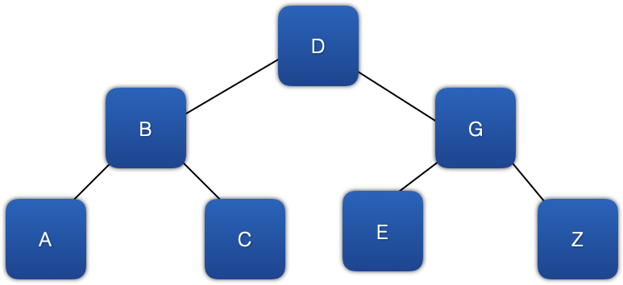

Inside Containers
Many of the standard containers, array, vector stack, queueu, etc., are acutally classes that have a private C-type array as a property. Algorithms are then turned into code, methods of the class, to make the use of the C-type array MUCH safer. These methods have been tested, enhanced, fixed, and optimized for decades. That's why it is so much safer to use a standard container that wraps a C-type array than to use one directly. If you are ever tempted to use a C-type array, you should probably use the std::array instead. It adds almost no overhead.
But sometimes, arrays are either too restrictive or the code to manipulate to match the need becomes way to complicated and slow. Take a look at this image of a structure known as a list.
Can this be represented using a C-type array? Yes. But just because you can, doesn't mean you should. When you shouldn't, that's when things like list and map come into play. They are NOT wrappers around a hidden C-type array. Instead they use a completely different design...nodes.
Take a look at this image. It's what you are going to be reading about for a while.

In this image, each blue square represents a node. A node has data. Each node in the image has A,B,C, or D as its data. A node also 'knows' about other nodes. This keeps the nodes in some specific order. These connections are the black lines you see in the image connecting the nodes together.
When nodes are well designed, you can start anywhere in the list and move either direction. That means, it has to know about the previous node, known as 'parent', and the next node known as a 'child'. In the image above, the node containing B is the child of the node containing A and the node containing A is the parent of the node containing B.
Take a look at this image again (By the way, this type of structure is known as a tree).
In this diagram, each node has to 'know about' two children, traditionally called 'right child' and 'left child.' Therefore, the node containing D is the parent of the two nodes containing B and G. The parent of the node containing B is the node containing D, and the parent of the node containing G is also the node containing D.
Compare the list and tree images. Notice that the right-most branch of the tree, the nodes containing D, G, and Z, looks just like a list. That's because a list is just a tree with no branches.😀 It should, then, be possible to create a well designed node that can be used to represent both a list and a tree. Ah...code re-use...that's a great thing! The code snippet below shows the code for a node that can hold characters and be used for lists and trees.😎
class Node{
private:
char value;
weak_ptr<Node> parent;
shared_ptr<Node> left_child;
shared_ptr<Node> right_child;
public:
Node(char a_value);
Node(char a_value, shared_ptr<Node> a_parent);
char& operator * ();
};//end of Node class
This Node class has a constructor that has, as parameters, a value and the node that should be the parent. Inside this constructor is where the pointers are arranged to point from parent to child and from child to parent.
Stop for a few minutes and think about deleting a bunch of linked nodes for a minute then answer the question, "Why is the parent pointer a weak_ptr?" Feel free to discuss this question and possible answers with other members of the class through direct conversation, or by some sort of posting. Googling won't be much help here.
Now, having a node that can hold characters is OK, but yuck! Why can't it hold anything we want like the std::list class template we used last week? To do that, the Node class also has to be changed and become a node class template.
Go back and review last week's information about class templates if you need to brush up.
I'm going to show you some code here...don't over think it. All that's going to happen is the char type keyword is going to get replaced with a temporary placeholder. It's called T. The first line of the code snippet below tells the compiler that Node is a class template, instead of a complete class, and the type placeholder is called T. The typename keyword is just used to tell the compiler that T is actually a type, not a variable. All that's happened is one line of code is added so the compiler can understand what we are doing, and then all the char type keywords are replaced with T. Other than that, there are no changes.
template<typename T>
class Node{
private:
T value;
weak_ptr<Node> parent;
shared_ptr<Node> left_child;
shared_ptr<Node> right_child;
public:
Node(T a_value);
Node(T a_value, shared_ptr<Node> a_parent);
T& operator * ();
};//end of Node class
This node class works and can encapsulate any type of data, but by themselves, nodes are pretty useless. Below is a simplistic, naive list class template. Notice that the List class template has Node as a private, inner class. Because of this, no code anywhere else in any app can instantiate or use the encapsulated Node class. Because the Node class template is completely encapsulated, it can be made much simpler than the previous code where Node was not encapsulated. Now its instance variables can be public and its operator can be deleted. It does keep the two constructors to help make instantiating Nodes easier.
Now, each instance of List can instantiate and directly manipulate a Node any time the list is told to add an element, but nothing else can touch the List's Nodes. This is good.
😀 Now the node won't need any boilerplate code for getters, setters, operators, and the like.😀
Compare the code for Node below with the Node code above.
There is a VERY important bit of code on the line right after the end of the encapsulated, Node inner class. shared_ptr<Node> root_node;. This is a private property of the List class template. It is a pointer to the Node instance that is the head of the list. By convention, we are referring to is as the root of the list. The root is equal to nullptr for an empty list.
/*
* list.h
* Never use this code in production.👎 👎
*
* Use std::list.👍
*/
#ifndef list_h
#define list_h
#include
using std::shared_ptr;
using std::weak_ptr;
/*
* declaration of custom namespace, class template name, properties,
* constructors, operators, and member functions.
*/
namespace naive {
template
/// This is a partial, naive implementation of a list-type container.
class List{
private:
/*
* Node is a private inner class so nothing other than an instance
* of list can instantiate one. Node's properties are public so
* instances of list can manipulate and access them directly.
*/
class Node{
public:
T value;
weak_ptr parent;
shared_ptr left_child;
shared_ptr right_child;
//Node constructors
Node(T a_value);
Node(T a_value, shared_ptr a_parent);
};//end of Node class
shared_ptr root_node;
public:
List();
void push_back(T aValue);
List map(std::functionmapping_function);
/*
* There are many more instance functions a fully functional list would need.
* Take CSE232, Designing Data Structures, to learn more!!
*/
};//end of List class
}//end of custom namespace
using naive::List;
/*
* List instance function implementations
*/
template
/// Instantiates an empty List.
///
/// Complexity - O(n)
List::List(){}
template
/// Adds a value to the end of the list. The implementation was selected to illustrate how to move through a sequence of linked nodes. There are designs for List that allow push_back to be implemented more efficiently than this naive design.
/// @param aValue the value to add to the list
///
/// - Complexity: O(n)
void List::push_back(T aValue){
shared_ptrcurrentNode = root_node;
shared_ptrnodeToAdd = shared_ptr(new Node(aValue));
if(nullptr == currentNode){
root_node = nodeToAdd;
return;
}
while (nullptr != currentNode->right_child) {
currentNode = currentNode->right_child;
}
currentNode->right_child = nodeToAdd;
nodeToAdd->parent = currentNode;
}
template
/// A non-destructive mapping instance methods.It applies the lambda function to
/// each value in the existing list and adds it to a list that is returned.
///
/// @param mapping_function the function to be applied to each value in the list
///
/// - Returns: a list that has as each of its values a modified version of each
/// value of this list
/// - Complexity: O(*n*) assuming that mapping_function has a complexity of O(*1*)
List List::map(std::functionmapping_function){
shared_ptrcurrentNode = root_node;
//if this list is empty, its mapped version should be empty also
if(nullptr == currentNode){
return List();//empty list
}
List mapped_list;
while (nullptr != currentNode) {
T node_value = currentNode.get()->value;
T mapped_value = mapping_function(node_value);
mapped_list.push_back(mapped_value);
}
//return a copy of the list
return mapped_list;
}
/*
* Node instance function implementations
*/
template
/// Value based constructor for a Node. For this constructor, the parent, left child, and right child nodes are
/// all null
/// @param a_value the value to be stored in the node
///
/// - Complexity: O(*1*)
List::Node::Node(T a_value):value{a_value}{}
template
/// Value and parent based constructor for a Node. For this constructor, the left and right child nodes are null
///
/// @param a_value the value to be stored in the node
/// @param a_parent a constant reference to the parent node of the node being constructed
///
/// - Complexity: O(*1*)
List::Node::Node(T a_value, shared_ptr a_parent):value{a_value},parent{a_parent}{}
#endif /* list_h */
To add a value to an empty list, use the list's push_back instance function. You can find the code for the push_back instance function above. There you can see that each time a value is to be added to a list, a node, nodeToAdd, is created to encapsulate the value; then that node is added to the list. If the node is empty, nodeToAdd is added to the list by setting the root node to be nodeToAdd. Otherwise, the last node in the list is found, nodeToAdd is set to be the last node's right child node, and nodeToAdd's parent is set to be the node that used to be the node at the end of the list.
Below is an example of using this naive, incomplete list class template, use it contain ints, and then add 3 ints to the list.
#include "list.h"
int main(int argc, const char * argv[]) {
List nums;
nums.push_back(5);
nums.push_back(7);
nums.push_back(9);
//make a new list that has all of the values doubled
List doubled = nums.map([](int an_int)->int{
return an_int*2;
});
return 0;
}